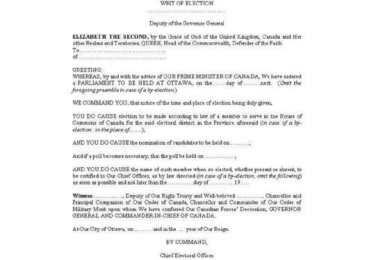

This is a legal notice of an election. In the coming weeks, you may hear the phrase, "drop the writ" a lot, but that's wrong. As former Chief Electoral Officer Jean-Pierre Kingsley told iPolitics during the
2015 election: "Writs are issued. It's plural because there are 338 elections being held at the same time. Candidates run not political parties,".
Writs need to be issued at least 36 days before the third Monday of October, four years from the last election.

Source: https://i.stack.imgur.com/XduX4.png
An actual Canadian election writ. Remember: "issued" not "dropped".
What's a riding?
These are the electoral districts or geographical areas Canada is divided into, each representing one seat in the House of Commons (parliament). There are 338 of them.
What is "first-past-the-post"? Why do people oppose it?
Also known as "winner takes all". The candidate on the ballot with the most votes wins. The party with the most winning candidates forms the government. The leader of that party becomes Prime Minister. If the party wins 170 seats or more, they get a majority and will be in power four years. If the party just wins more seats than the others they form a minority government. The current government is a majority. The last minority was won in 2008 by Stephen Harper's Conservative Party.
You may have heard a lot about electoral reform in this regard. In 2015, Prime Minister Justin Trudeau even campaigned on it. That's because, while first-past-the-post is simple and straight-forward, it ignores the popular vote, which tallies how many people chose a party overall. This is one of the main criticisms of Premier Doug Ford's Ontario election win in 2018.
When's the election?
October 21, 2019. As mentioned, elections have to take place every four years from the last one on the third Monday of October. This date is fixed as per the Elections Act, Section 56.1. If this day is no good because it coincides with a religious or cultural holiday, municipal or provincial election, the first Tuesday or Monday after what would've been polling day is the election date. The Chief Electoral Officer decides.
What do I need to vote?
One piece of ID and something with your home address on it. For the first time this year, the voter registration card you get in the mail can be used as proof of residence. You can use other combinations as well.
What are third parties?
Hopefully you know what political parties are, we have a whole page on them. Third parties are groups that campaign for candidates or parties, like labour unions. You mainly see their commercials on TV. The Election Act states that if any of these groups spends more than $500 on an ad they have to register as an official third party with Elections Canada and will then have an advertising spending limit of $$511,700.
Recently, Elections Canada warned that environmental groups who mention climate change during this campaign would be engaging in partisan messaging.
What are polls?
These are the results of opinion surveys conducted by research companies. You know those annoying calls you get from unusual phone numbers at the worst possible times in the evening? That's them.
Polls are like a weather report taking the barometer of the electorate—merely just predictions of an election outcome. They're interesting and provide lots of news coverage, but can be as reliable as a coin flip.